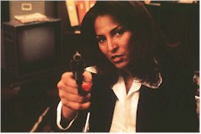
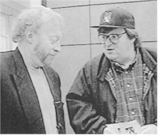

48th Berlin International
Film Festival (1998)
Courage to Watch
Francis Ford Coppola, Gwyneth Paltrow, Robert Altman,
Matt Damon (two films), Pam Grier, Neil Jordan, Claire Danes, Barry Levinson, Brenda
Blethyn, the brothers Coen, Anne Heche, Robert De Niro (two films) Stephen Rea, Robin
Williams and Samuel L. Jackson are among the currently hot Hollywood players whose recent
work – most of which has been on American screens for weeks now – will be
featured in the high-profile competition section of the 48th Berlin International Film
Festival, which opens Wednesday (11 February) with the European premiere of Jim Sheridan's
The Boxer, starring Daniel Day Lewis and
Emily Watson.
 The festival will show literally hundreds of new
films in seven sections (Competition, Forum of New Cinema, Panorama, Market,
Retrospectives, Children's Film Festival and New German Films) through 22 February, and
although the list of visiting stars is never precisely firm (Paltrow's new film Sliding
Doors has already dropped out of the closing night slot, replaced by John Grisham's The Rainmaker), look for a good number of
the artists listed above to show up at this huge and immaculately run
celebration-cum-endurance test of movies and those who make, star in, market, exhibit and
just hang around them.
The festival will show literally hundreds of new
films in seven sections (Competition, Forum of New Cinema, Panorama, Market,
Retrospectives, Children's Film Festival and New German Films) through 22 February, and
although the list of visiting stars is never precisely firm (Paltrow's new film Sliding
Doors has already dropped out of the closing night slot, replaced by John Grisham's The Rainmaker), look for a good number of
the artists listed above to show up at this huge and immaculately run
celebration-cum-endurance test of movies and those who make, star in, market, exhibit and
just hang around them.
The title of the Children's Film Festival (12 to 21 February) is "Mut ze
handeln," which translates as "courage to act," and that's as good a motto
as any for the festival as a whole. "Never before were release dates changed so often
and never before were so many major films made available to the festival at the very last
minute," festival director Moritz de Hadeln said during the 03 February press
conference unveiling this year's competition program.
Fourteen world premieres and five first feature films are included in the 29 features
set to unspool at the famed Zoo Palast cinema (selected, according to de Hadeln, from more
than 600 official submissions). In addition to the Irish The Boxer and the British
Butcher Boy, the Hollywood entries include Good Will Hunting, Jeff Bridges and
John Goodman in Joel and Ethan Coen's The Big Lebowski, Jackie
Brown, Wag the Dog,
The Gingerbread Man, Great Expectations and John
Grisham's The Rainmaker (the last three presented out of competition). Other notable
entries include the Dutch-Belgian Holocaust drama Left
Luggage (actor Jeroen Krabbé's directorial debut), the Japanese animated
blockbuster Princess Mononoke (which Miramax will distribute stateside), two new
German features (Micheal Gwisdek's Das Mambospiel and George Sluizer's European
Community thriller The Commissioner, with John Hurt and Armin Müller-Stahl), two
new Australian movies (The Boys and The
Sound of One Hand Clapping) and, as has become the norm the last few years, a handful
of films from Asia, including actress Joan Chen's directorial debut Xiu Xiu – The
Sent-Down Girl (China), Stanley Kwan's Hold You Tight (Hong Kong), Lin
Cheng-sheng's incest drama Sweet Degeneration (Taiwan), Nobuhiko Obayashi's Sada
(Japan) and the mainland-made short film Butterfly Flying. Veterans returning to
the competition include French director Jacques Doillon with Too Much (Little) Love
(his fourth appearance), Spanish helmer Vicente Aranda and his The Naked Eye, Barbara
by Danish director Nils Malmros and Same Old
Song by French auteur Alain Resnais.
Other countries represented include Russia (Valeri Todorovsky's The Land of the Deaf), Great
Britain (Nick Hurran's Girls' Night, starring Julie Walters, Brenda Blethyn and
Kris Kristofferson, as well as Michael Winterbottom's new film I Want You), Brazil
(Walter Salles Jr.'s hotly anticipated Central Station) and even Roman Polanski's
1965 horror classic Repulsion – one of 13 films honoring festival special
guest Catherine Deneuve. The eligible films will vie for the Gold and Silver Bears awarded
by the festival.
"There is no doubt," de Hadeln went on to say at the last week's press event,
"that the festival has an exceptionally good and interesting program in all
sections." The Panorama, for instance, run by Wieland Speck, will spotlight 40
feature films, 11 documentaries and 25 short films (subdivided into "Art &
Essay," "Documentary," and "Panorama Special" categories), while
the New German Cinema program run by Hof Film Festival founder and director Heinz Badewitz
will showcase new films from the brightest names in the currently thriving German film
industry.
Since 1971 the independently run Forum of Young Cinema (renamed Forum of New Cinema
this year to avoid the obvious confusion) has been programmed by Ulrich and Erika Gregor
in five cinemas scattered throughout the city. Among the dozens of films that meet the
goals of "experimental aesthetics which develop new styles, reflect contemporary
issues or find new horizons" in their 28th edition are Michael (Roger and Me)
Moore's The Big One, avant-garde director Lynn Hershman's Conceiving Ada, Ron
Havilio's mammoth 6-hour Fragments*Jerusalem (a decade in the making) and German
favorite Rudolf Thome's Tiger-Stripe Woman Waits for Tarzan, apparently a blending
of science fiction and the gentle social satire that is the hallmark of his best work. On
an interesting programming note festival representatives travel all over the world meeting
with officials and screening potential festival entries, trips that are usually
uneventful. But according to an early December festival press release, Forum consultant
Peter B. Schumann was arrested by Cuban officials when he deplaned in Havana to attend a
festival of new Latin American cinema there. Credited with bringing Strawberry and
Chocolate to Berlin a few years ago (where it subsequently won a Silver Bear),
Schumann's activities in support of the human rights movement apparently ran him afoul of
the current regime. He was detained, charged with violating a two year immigration ban
(the existence of which was news to him) and deported back to Berlin. No new word on the
upshot of this, as the festival awaits a demand sent to the Cuban Film Institute that the
ban be lifted.
The Children's Film Festival, curated by Renate Zylla, consists of nine features and 11
shorts from around the world, loosely grouped under the aforementioned heading of
"Courage to Act" ("unusual situations requiring courage," says the
press release). The generally more kid-friendly Scandinavian countries have three features
– including Danish director Lone Scherfig's opening night movie On Our Own...
– while Canada has two films, John Hurt stars in Bob Swaim's American production The
Climb and features are booked representing Japan and Bulgaria.
In addition to the program honoring Deneuve, there's a substantial Historical
Retrospective sidebar, conceived by Wolfgang Jacobsen and organized by the Stiftung
Deutsche Kinemathek, that this year will explore the significant contributions to German,
French and Hollywood cinema of brothers Robert (director) and Curt (screenwriter) Siodmak.
The former distinguished himself in the film noir genre during the 1940s with such
films as The Spiral Staircase (1945), The Killers (1946) and Criss Cross
(1948), while the latter – who will attend the festivities – wrote The
Invisible Man Returns (1939), The Wolf Man (1941), I Walked with a Zombie
(1943), Son of Dracula (1943 – which he also directed), The Beast with Five
Fingers (1946) and the novel "Donovan's Brain," which inspired no less than
three genre films.
The entire festival is set against the backdrop of massive change in Berlin, as the
gargantuan Potsdamer Platz development begins to take shape. Festival organizers have met
continuously throughout the year with city officials to plan the big move in the year
2000, when the cramped but cozy festival center in what used to be the heart of Cold
War-era Berlin gives way to new digs in the shadow of the Brandenburg Gate.
In the meantime, periodic dispatches will report on comings, goings and related
shenanigans in Berlin, as well as individual film reviews, acquisition news and
unsubstantiated gossip. Sure, it takes courage to jump into such a celluloid fray, but to
be honest it isn't the worst assignment in the world. And thanks to the legendary German
penchant for organization and a fierce love of the politics of film unequaled on the
international festival calendar, the 1998 edition promises to live up to it's deserved
reputation.